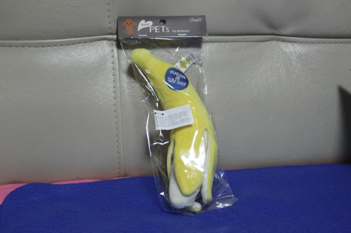
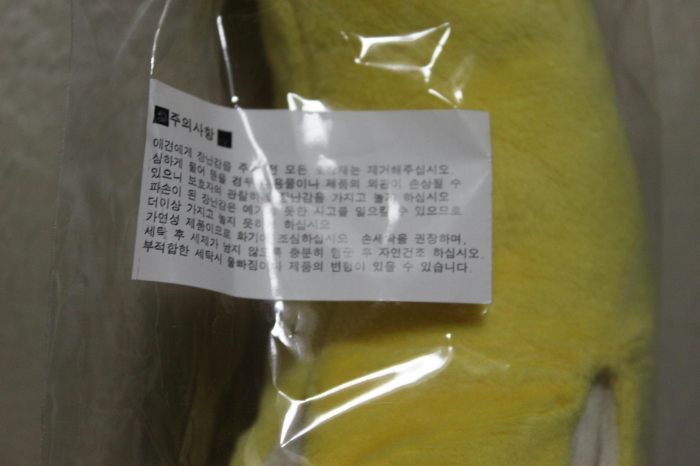
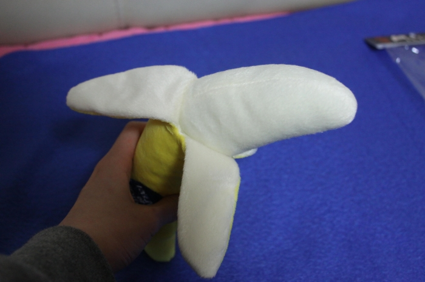
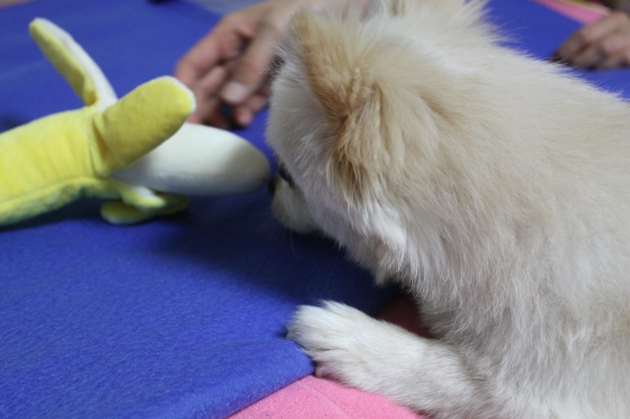
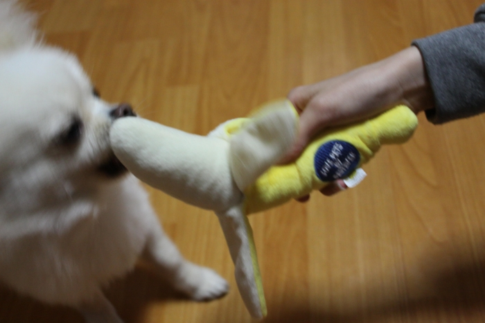
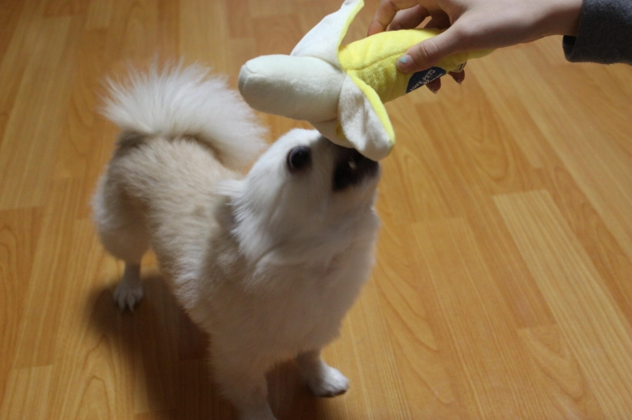
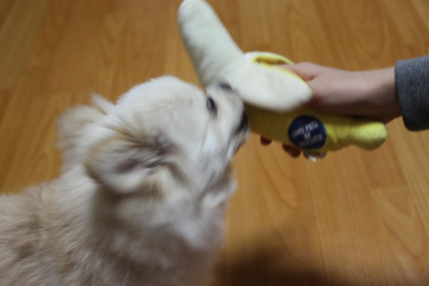
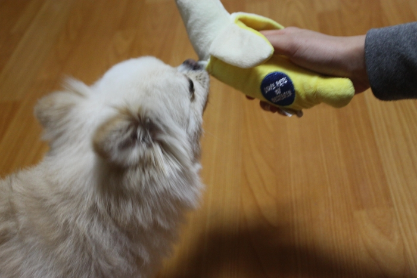
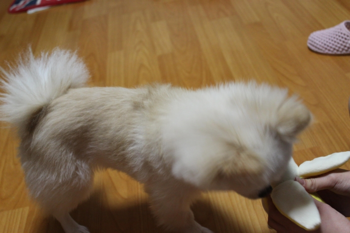

| 제목 | 바스락 삑삑 장난감 | 작성자 | 룽지 | 조회수 | 70 |
|---|---|---|---|---|---|
요즘 개린이들 사이에서 핫!한 바스락삑삑 장난감! 바스락 거리기만 하는건 바스락 장난감 삑삑이도 있으면 바스락삑삑이라고 하더라구요+_+ 써보신 분들이 바나나가 제일 튼튼하다고 하신것도 있고 바나나가 너무 귀여워서~ 껍질도 까져있어서 손에 꼭쥐고 물어뜯으면 먹는거 같아요  뭔가 웃긴건 껍질로 바나나가 다 안감싸진다는거?!  주의사항!  뽀-얀 바나나 장난감  벌써부터 흥미를 보이는 룽지  삑삑거리며 다가가니 금방 친해져요  룽지는 유독 바스락거리는 껍질을 좋아하더라구요 바스락 소리는 그냥 진짜 비닐봉지 소리에요    바나나가 튼튼하고 좋은거 같아요:) |
|||||